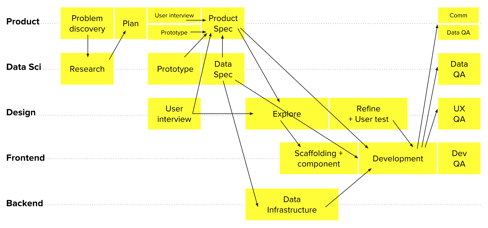
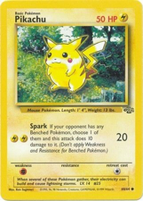
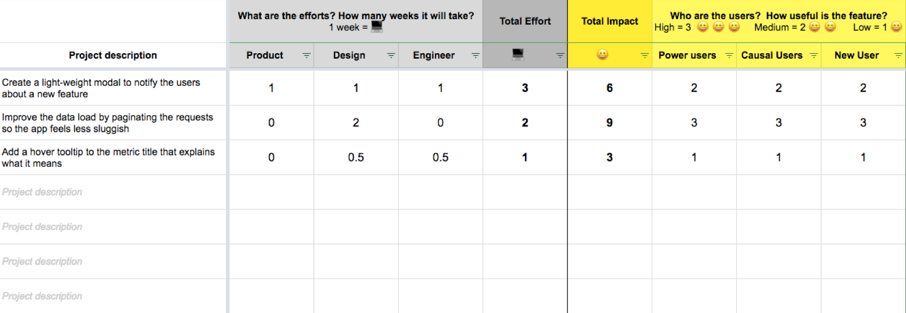
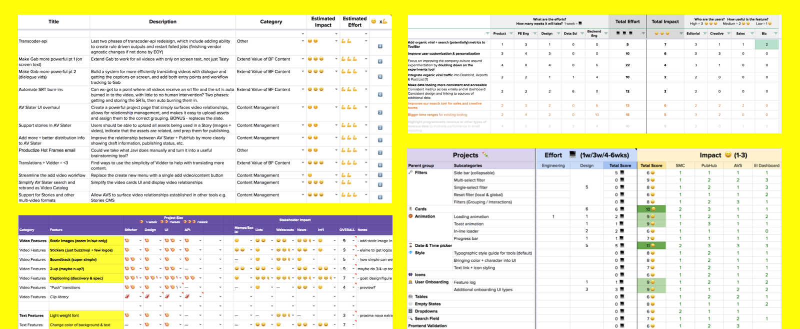

Impact ✕ Effort Worksheet
Visualize impact and effort for better prioritization
Impact ✕ Effort Worksheet
Visualize impact and effort for better prioritization
Sequencing projects for a cross-disciplined team of 12 is a constant challenge. As the lead of a team that builds internal analytic tools for 600 MAUs, our projects often have multiple dependencies either among ourselves or with another team. Here is a typical life cycle of a product:

The problems we face during prioritization:
This makes me wonder...
What is the best way to evaluate a bunch of ideas simultaneously?

Like in trading card game, what if each project is given a score for its core values? This would help us to compare their strength and weakness stats against each other, rank their importance, and determine which one to pursue or descope.
Introducing the Impact 😀 ✕ 💻 Effort worksheet

To make prioritization transparent and easy, I create a simple method to evaluate a bunch of ideas by visualizing its user impact and team effort with a scoring system. Here is how it works:
List all the ideas along with a brief description.

The total scores generally informs the size and influence of the project. For example:
There are many prioritization methodologies on product management out there, but the simplicity of the Impact x Effort worksheet meets our need for a few reasons:

↧ Free free to download the spreadsheet for your use. Email me if you have any idea for improvement. I am always looking for feedbacks. 🙂